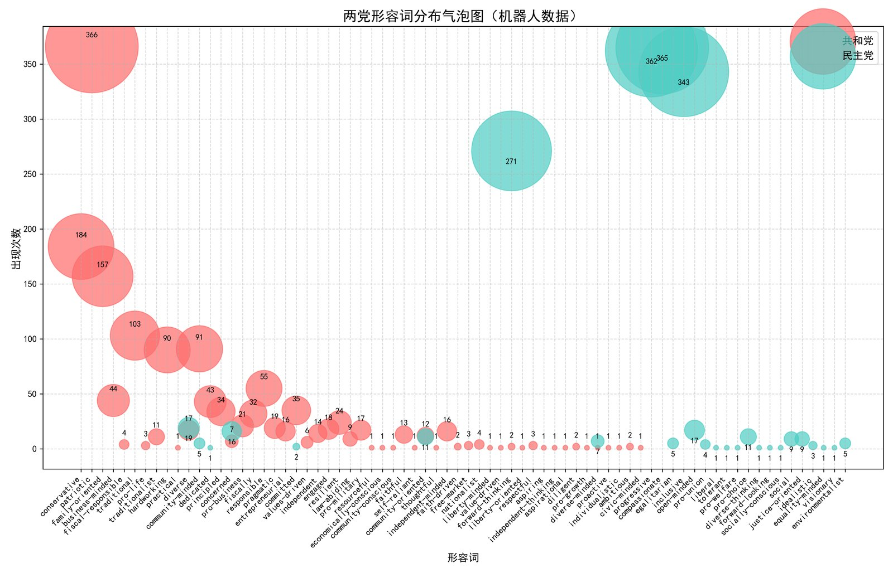

个人定位
深圳大学南特金融科技学院金融科技专业学生，关注 AI 产品、金融科技应用、数据分析和商业落地表达。
基本信息
深圳大学南特金融科技学院金融科技专业学生，关注 AI 产品、金融科技应用、数据分析和商业落地表达。
AI 审计产品、非遗商业平台、政府资政调研、创新创业比赛、合成虚拟人、Python 数据分析。
能参与产品需求梳理、数据处理、商业调研、路演材料组织，并用清晰文档和可验证材料呈现项目成果。
教育背景
实习经历
项目经历
比赛经历
科研经历

技能与荣誉
有使用 Python 完成项目的经验，能够使用 Pandas、NumPy、re 等库进行数据处理。
了解 OpenCV、Pillow 等图像处理工具库，使用 Matplotlib 完成数据可视化。
Pandas、VS Code、Excel、PPT，并具备面向路演和报告的材料整理能力。
中国国际大学生创新大赛（2025）国家银奖；学院培优奖学金（法国南特高等商学院冬令营交流）。
附件下载
附件用于 HR 或教师核验。奖学金证明等待后续提供后再补充。